This is your complete guide to landing your dream job in the field of search engine optimization. Because, here, you will find the most asked and top SEO interview questions for freshers and experienced professionals both, along with the anwers.
Every day, thousands of new websites come into existence. To fight the competition and drive relevant traffic to the website, search engine optimization (SEO) is crucial. That’s the reason people who have the right SEO skills are in high demand.
If you are looking to build a career in this field or want to switch to a new job, you must be able to crack the SEO job interview. To help you with what is asked when appearing for the job, we have covered some of the most common SEO interview questions and answers for freshers, SEO Executive, SEO Analyst, Senior SEO Executive, as well as SEO Manager.
These profiles are the most visible on the job portals and LinkedIn as companies keep on hiring SEO professionals.
In this quick yet comprehensive write-up, we have covered the scope of SEO in India, the skills required to become an SEO Expert, things to know before appearing for the interview, and most importantly, the top SEO interview questions in 2026.
You can join our online SEO course at WsCube Tech and learn industry-relevant skills with practical training to boost your career opportunities.
[ez-toc]Introduction to Search Engine Optimization (SEO)
If you are an absolute beginner, you must first know exactly what SEO is.
SEO stands for Search Engine Optimization. It is the process or technique of optimizing the ranking of a website on Google and other search engines like Bing, Baidu, and DuckDuckGo.
In simple terms, if you have a website, you want relevant people to visit it. In order to bring those people to your site, SEO is done.
There are several things and factors that matter in SEO. When you go through these interview questions on SEO, you will get great knowledge of this field. Moreover, you will be able to crack your next interview to land that desired job.
What is the Job of SEO?
The primary work of an SEO professional is to understand the latest ranking factors, create strategies accordingly, apply relevant techniques, and work with content and web development teams to optimize the website.
Here, the motive is to improve the experience for the user while optimizing things for the search engines. Eventually, every strategy is focused on driving more traffic to the website and increasing the ranking for the relevant terms searched by the users on Google.
Suggested Reading: 9 Latest Social Media Marketing Trends You Can’t Ignore
Things to Know While Preparing for SEO Job Interview
Whether you are a fresher or an experienced professional, you must know certain things before applying for the job and going for an interview.
Here is a quick list for your reference:
- Well-organized and minimalist resume
- Mention SEO results and success stories (for experienced)
- Include SEO course or training in the resume along with institute name (if you have done it)
- Keep multiple hard copies of the resume handy
- Prepare for the actual interview with a mock interview
- Keep course certifications, internship certificates, and experience letters handy
- Go for the interview in a formal attire
Recommended Professional Certificates
AI-Powered Digital Marketing Course
Professional Certification in AI
Performance Marketing Bootcamp
SEO Specialist Bootcamp
Learn Basics of SEO Before Interview (For Freshers)
Many candidates think that they don’t need to have detailed knowledge of the field if they are freshers. But this is not true. Especially when you are applying for a job at a good organization, the basic interview questions for SEO freshers are asked. You must be able to answer those questions.
If you don’t learn the basics, it is a big mistake. You should go for an offline or online SEO course or internship so that landing a good job becomes easier.
Below is a quick list of SEO fundamentals you must know:
- What is SEO, and how does it work?
- Why is SEO important?
- What are the main types of SEO?
- How to do Keyword research?
- What is the difference between on-page and off-page SEO?
- What are some common SEO tools?
Basic SEO Interview Questions For Freshers (2026)
Now that you know what you should do while applying for a job in search engine optimization, let’s go through the most asked SEO interview questions and answers for freshers.
1. What is SEO in digital marketing?
SEO stands for Search Engine Optimization. It is a process or technique in digital marketing that involves optimizing a website for search engines like Google, Bing, Baidu, Duck Duck Go, etc.
It helps businesses and individuals to target relevant audiences on search engines. Since almost everyone today has access to the internet, the majority of them search their queries on Google and other search platforms.
By appearing for those search queries, websites have the opportunity to drive traffic to the website and make customers. To be able to appear for those search queries, called keywords, we need to do SEO.
2. What is the importance of SEO?
SEO plays a vital role in increasing the visibility of a website and business on search engines. It eventually helps in growing website traffic, attracting potential customers, selling products and services online, and growing the business.
Let’s understand the importance or role of SEO in digital marketing in a bit more detail:
a) Build trust and credibility
With SEO, businesses or individuals can show their websites to an unlimited number of users. As visibility improves, it helps in building trust and authority.
For instance, if you search for terms related to digital marketing or SEO, you will find websites like neilpatel.com, backlinko.com, hubspot.com, searchenginejournal.com, etc., among the top results on the search results page.
Since these sites repeatedly appear to users, it improves their branding and authority.
b) Reach a broad audience
There is no better organic way to reach millions of users than search engine optimization. By covering relevant content in a niche, a website can target a large base of audience. One can master the art of creating targeted content with a reliable online content writing course.
c) Improving user experience
While almost every business today has a website, not all are optimized for search engines. When a website opts for strategic SEO, it means the user experience will be improved.
As the majority of SEO ranking factors are focused on enhancing the UX, such as website security, loading speed, quality content, etc., the users of a business will have a highly satisfactory experience. Hence, while preparing for SEO interview questions for freshers, you must know about user experience and why it matters so much.
d) Lead generation and conversion
To grow the business, generating more leads and sales is crucial. Since SEO helps in attracting the right audience to the website, businesses have more opportunities to convert them into customers. Best SEO courses in India and globally showcase how well you can utilize search engine optimization to generate quality leads.
e) Helps businesses quantify the output
SEO is measurable or quantifiable. Using tools like Google Analytics, you can track the number of people visiting the website, time spent by users on a particular web page, conversion rate on product pages, and much more.
f) Long-term results
While businesses can generate leads and sales with PPC advertising and other forms of digital marketing, but SEO is a sustainable technique.
3. What is Google Autocomplete?
When we search for anything on the Google Search bar, it shows us some suggestions automatically. The role of this feature is to help users complete the searches more conveniently and faster.
Since the autocomplete feature reflects suggestions on the basis of what is being searched on Google, it is of great use in SEO. We can understand what people are searching for related to our topic, product, service, or business.
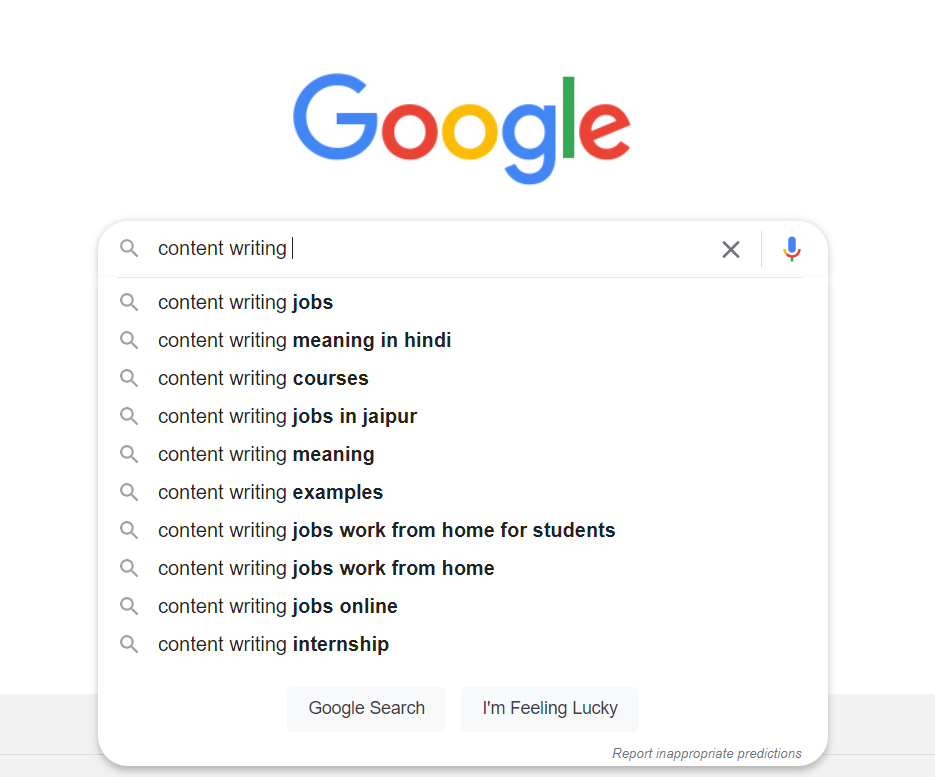
4. What is a domain name?
A domain name is simply the primary name with which a website or blog runs. For example, the domain name of the website where you are reading the SEO interview questions right now is wscubetech.com.
The domain name of Microsoft is microsoft.com. The domain names are unique, like usernames, and can’t be registered if anyone else has taken them.
5. What is the difference between a domain name and a domain name extension?
The domain name is the full name of a website like
- wscubetech.com,
- yourstory.com,
- bigrock.in,
- upsc.gov.in, etc.
On the other hand, the extension of a domain name is the suffix. For example, the domain name extension, also called TLD (top-level domain), of wscubetech.com is .com. The same for bigrock.in is .in.
There are several types of domain name extensions available:
- .com
- .in
- .net
- .org
- .edu
- .co
- .shop
- .online
- .wiki
- .cab
- .academy
- .me
- .app
Here is a comprehensive list of all the domain name extensions available for registration.
6. What are keywords in SEO?
Keywords are actually the most common search queries of users related to a specific product, service, information, etc.
For example, if I am writing an article on the topic “Top 10 Laptops Under INR 50,000”, then I first need to find what people are searching for on Google related to this topic.
For the given topic, the keywords can be:
- “best laptops under 50k”,
- “laptops under 50000 in India”,
- “best laptops below 50000”, etc.
These keywords are then used within the primary content on the web page or article so that we can match the content with the queries of users.
This is one of the most critical concepts in this field, which you must know in detail because such SEO interview questions for freshers are very frequently asked.
7. What is keyword density in SEO?
The meaning of keyword density is how many times a keyword is used within the content in an article or web page compared to the total number of words in that article or page.
It is presented in the percentage. For example, if I use a keyword 5 times within the content of 500 words, the keyword density will be 1%.
8. Does keyword density matter?
Yes. It matters in SEO. It is because if we use several keywords numerous times in our content, it can sometimes lead to keyword stuffing.
Keyword stuffing is bad for search engine optimization. Hence, it would be great to take care of the right keyword density.
9. What is keyword stuffing in SEO?
According to Google, keyword stuffing is the process of using too many keywords on a web page for the sake of appearing in the top results for all those keywords.
What it means is that the keywords are used without any content flow or context. It became a regular practice by many SEO professionals a few years ago, but Google now focuses on the context of the content and keywords used.
Now, keyword stuffing is a black hat SEO technique and works as a negative SEO ranking factor. To avoid this, the keywords must be used within the content in a natural flow. No keyword should look as if it is forced.
10. Can you share an example of keyword stuffing?
Here is a keyword-stuffing example (also featured by Google):
“We sell custom cigar humidors. Our custom cigar humidors are handmade. If you're thinking of buying a custom cigar humidor, please contact our custom cigar humidor specialists at custom.cigar.humidors@example.com.”
The underlined parts of the content are keywords. All these keywords have been used repeatedly within a single paragraph just to optimize this content for multiple keywords. This is called keyword stuffing in SEO.
11. What is keyword difficulty in SEO?
The meaning of keyword difficulty is how difficult it is for a piece of content to rank for that keyword on Google’s first page.
If a keyword has low difficulty, it would need lesser effort to rank as compared to a keyword with high difficulty.
12. What are the different types of keywords in SEO?
We can categorize the types of keywords in SEO on the basis of length and intent.
Types of SEO Keywords Based on Intent:
- Informational keywords
- Navigational keywords
- Commercial keywords
- Transactional keywords
SEO Keyword Types on the Basis of Length:
- Short-tail keywords
- Mid-tail keywords
- Long-tail keywords
Other Types of Keywords:
- Geo-targeted keywords
- LSI keywords
- Long-term evergreen keywords
- Short-term fresh keywords
13. Why is keyword research important in SEO?
The importance of keyword research in SEO is that it helps in finding what people are actually searching for on Google and other search engines.
For any website, its products, services, or content to rank on search engines, the first step is finding the targeted keywords.
If we use the right keywords, only then can we optimize our pages for higher rankings and more traffic. Else, the content won’t rank even if it is written with quality in mind, and the overall website structure is fine.
14. Where do we use keywords?
It is one of the top SEO interview questions in 2026, as you must know how to use the right keywords at the right places.
The keywords are used in a number of different places on a page. For on-page SEO optimization, we should use keyword(s) in:
- Meta title
- Meta description
- URL
- Page content
- Image alt tag
- Subheadings
- Anchor Text
15. What are seed keywords in SEO?
Seed keywords are those that have one to two words. These are short-tail keywords, typically with high monthly search volume and high SEO difficulty.
These keywords help in finding ideas about other relevant keywords, like mid-tail and long-tail keywords.
For example, ‘digital marketing’ is a seed keyword. It helps in finding other relevant keywords like ‘digital marketing course’ or ‘digital marketing services’.

16. What are long-tail keywords?
As the name suggests, long-tail keywords are those that are longer or have more words. These are usually more targeted, specific, and meet the user’s query. Such keywords are also great for voice SEO.
Let’s understand the meaning of long-tail keywords with example. ‘online seo course in india with certificate’ is a long-tail keyword as it has more than six words.
In general, keywords with more than three words are considered long tails. Another important characteristic of these keywords is that they have lower search volume but also low competition. It means that long-tail keywords are easier to rank for.
17. What is the difference between long-tail vs short-tail keywords?
Both long-tail keywords and short-tail keywords play a major role in search engine optimization.
The difference between the two is that short-tail keywords are short (1-2 words), whereas long-tail keywords are longer (3+ words).
In terms of search volume and competition, the short-tail keywords have higher volume and high competition. Whereas, long-tail keywords generally have low volume and low competition.
The long-tail keywords are slightly more targeted and easier to rank for compared to short-tails. For a new or low-authority website that is trying to build some traffic, it would be better to go with long tails.
18. Can you give me some examples of long-tail keywords?
Here are some good long-tail keyword examples:
- Best digital marketing course in India
- Learn content writing from scratch
- Make pizza at home without oven
- Best laptops in India under 70000
- What is local seo and how does it work
19. What is the bounce rate in SEO?
The bounce rate of a website means the rate of visitors who come to a page on the website leaving without taking any further action.
For example, a blog post on your website is driving good traffic, but the majority of users leave the page without clicking on any other links on the page. Then the bounce rate will be high.
For product and service pages, it can mean that users are leaving without buying anything or filling out the forms.
The bounce rate in Google Analytics is calculated on the basis of the number of users coming to a web page and the number of users leaving without taking any action.
A user is considered bounced when he:
- Closes the tab or window
- Clicks the back button on the browser
- Pastes a new URL in the URL bar or searches for something else
- Stays inactive for a long time and the browser session times out.
20. What is a sitemap in SEO?
A sitemap is a file that tells Google’s crawlers about the URLs of your website that you want them to crawl. It is like a link map of the site.
Google and other search engines read this file, and it becomes efficient for them to understand the structure of your site. In the sitemap file, the website owners or SEOs include all the URLs of web pages, articles, and more that are meant to drive traffic.
Here is an example of what sitemap looks like:
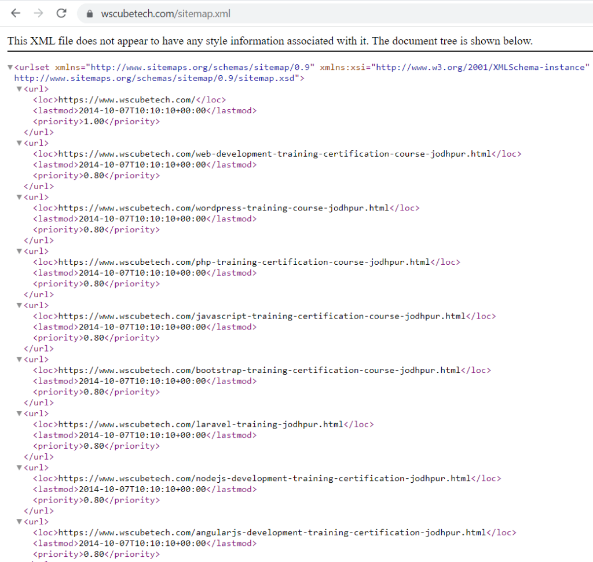
21. Why sitemap is important for SEO?
Sitemaps help search engines to easily navigate to the site and discover all the intended URLs for crawling and indexing. So, it improves the crawling of the site, which is good for search engine optimization.
Usually, if there is a small website where all the links are available in the menu or footer, then Google can crawl these links easily. However, if you have a large website with hundreds of pages, then a sitemap becomes crucial. Else, Google might now crawl some of the pages.
You need to have a good idea about using sitemaps because such SEO interview questions for freshers are often asked.
Essential SEO Topics You Should Know
| Keyword Research Tools | Technical SEO Checklist | Off Page SEO Techniques |
| Link Building Mistakes | On Page SEO Factors | Best Chrome Extensions |
| AI SEO Tools | On Page SEO Checklist | SEO Meta Tags |
22. How to find sitemap of any website?
The easiest way to find the website sitemap is by entering the URL of that website and adding sitemap.xml behind it.
For example, if I want to check the sitemap of wscubetech.com site, I’ll enter its URL (https://www.wscubetech.com/) and then add sitemap.xml behind it (https://www.wscubetech.com/sitemap.xml).
If this doesn’t work for a website, you should try the other variations of the sitemap file name (followed by site URL), which are:
- /sitemap_index.xml
- /sitemap-index.xml
- /sitemap.txt
- /sitemap/sitemap.xml
- /sitemapindex.xml
- /sitemap/index.xml
- /sitemap1.xml
Lastly, there is one tricky way to find sitemap, which is by first locating the robots.txt file of the website. In the robots.txt, you can find the sitemap link.
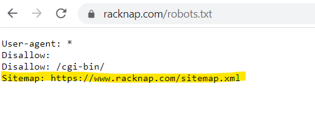
23. What is a robots.txt file?
Robots.txt is a file that is used for providing instructions to search engine bots about how to crawl and index the website & its pages.
This file is in .txt format, which means it includes only text, no HTML code. Its role is to avoid unnecessary visits by search engine bots on the site. Generally, this is the first file on the site visited by the crawlers.
24. What is anchor text in SEO?
The anchor text is the clickable text on a page. In other words, if I have written a paragraph and hyperlinked one or more consecutive words, then the hyperlinked text here is the anchor text.
Usually, the anchor text is visible on the website in a different color than the normal content. For example, in the screenshot below, the text ‘content writing’ is linked to a relevant page. This is an anchor text here.
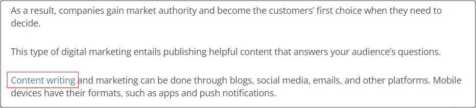
The role of using anchor text is to tell users the intent of the link. Here, if I have linked ‘Content writing’, it means users will land on a page related to content writing. It is also good for SEO as search engines get the context.
25. What are meta tags in SEO? What are different types of meta tags?
Meta tags are snippets of HTML code, and these are used for structuring the content on a page, and telling Google and other search engines about the content. For example, we can use a meta title to tell search engines what page title to show to the users on SERP.
Every page on a website has meta tags. These tags are part of the code and are not visible to the end users.
The following are the primary meta tags used in SEO:
- Meta title
- Meta description
- Meta robots
- Heading tags (H1 to H6)
- Image alt tags
- Canonical link tag
- Social media meta tags
- Meta viewport
26. Do meta tags help in SEO?
Yes. Meta tags are good for search engine optimization. It is because these tags help in telling Google what title and description to show on Google, how the content is structured, etc.
However, you should understand that not all meta tags are going to help in SEO all the time.
27. What are meta keywords?
Meta keywords are a type of meta tag, but nowadays, these are not used. In old-age SEO, the meta keywords were used to tell search engines about the intent of the page.
However, it was being abused to manipulate rankings. Hence, Google and most of the other search engines no longer consider this meta tag.
28. What is meta title in SEO?
The meta title is the title of a page that is shown to users when that page appears in SERP. Also called the title tag, it is also shown to users on the browser tab. For example, the meta title of our web page about online digital marketing course shows something like this in SERP:
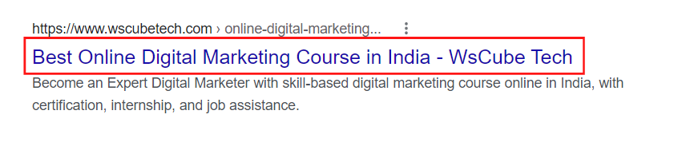
29. What should be the meta title length? Is there any character limit?
The length of the meta title should be between 50 to 60 characters so that it is properly visible to the users on SERP. If the meta title is longer, Google will cut it off after the defined length.
One important thing to note is that Google is now considering the meta title length in terms of pixels instead of characters. The meta title should be within 580 px.
30. How to check the meta title length? Are there any tools?
Yes. There are several tools to check the meta title length. I usually prefer these two tools:
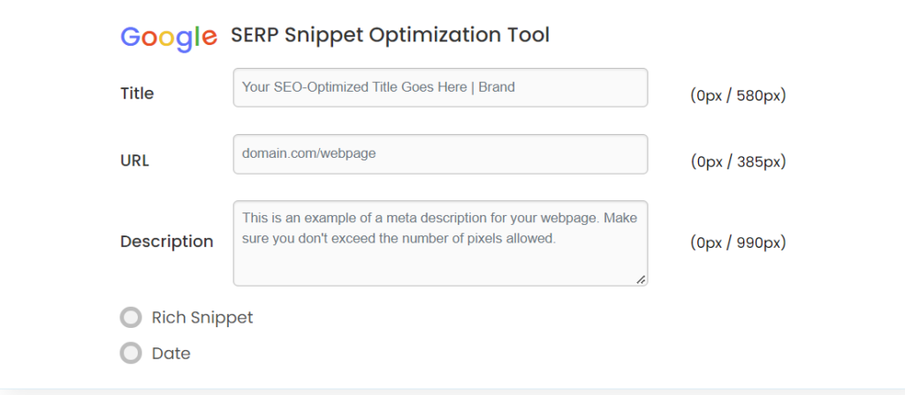
31. What is meta description in SEO? Why is it used?
The meta description is the short summary of the intent of the page. It is shown in SERP below the meta title and helps in telling users what to expect on the page and convincing them to click.
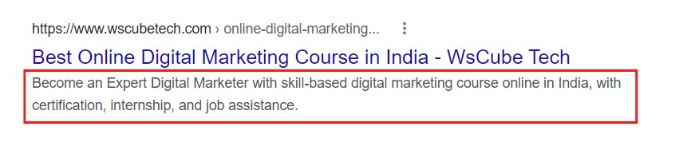
32. What is the alt tag in SEO?
The alt tag is an HTML tag used to define the intent or purpose of the image on a page to users and search engines. It is called alt text or alternative text.
33. Why to use alt tag for images?
There are a number of crucial benefits of using image alt tags:
- To tell search engines what the image is about. It is great for SEO.
- In case the image fails to load, the alt text will appear to users.
- If visually impaired people are browsing a page, the screen reader will speak the alt text. It helps them to better understand that there is an image and what it is about.
Interview Questions for SEO Executive (1-2 Years Exp.)
If you have been in the field of SEO for a year or two now, then the following SEO executive interview questions and answers will be highly relevant for you. By preparing for these (along with the questions mentioned above), you can easily crack the interview round.
1. What are the top ranking factors in SEO in 2026?
This is among the frequently asked SEO interview questions whether you are a fresher or an experienced executive.
There are numerous SEO ranking factors that are important to optimize the positioning of a website on Google.
Below are some of the major ranking factors for SEO in 2026:
- Use of targeted and relevant keywords
- High-quality content
- Website loading speed
- Website security
- SSL Certificate
- Mobile-friendly
- Backlinks from niche-specific authority sites
- Optimized meta title and description
- Image optimization
- Proper use of heading tags
- Internal and external linking
- Fixing broken links
- SEO-friendly URLs
- Server location
- Website uptime
- Website usability
- Schema and structured data
- Low bounce rate
- Domain authority
- Sitemap
- Canonical tags
- Core web vitals
2. How does Google Autocomplete work?
When people search their queries on the Google search engine, the platform understands the language, location, and interest of that query. On the basis of these factors, Google shows the suggestions to other users accordingly.
3. How to use Google Autocomplete for SEO?
Since the autocomplete suggestions offered by Google Search are based on the queries of the people, we can understand what people are searching for on Google. It also helps in finding long-tail keywords.
Moreover, we can use autocomplete suggestions to target specific keywords within our content.
4. What is ccTLD?
ccTLD stands for country code Top-Level Domain. These domain name extensions are generally used for country-specific websites or by those who have targeted customers in a particular country.
Some examples of ccTLD are as follows:
- .in (India)
- .ae (United Arab Emirates)
- .au (Australia)
- .ca (Canada)
- .cn (China)
- .eu (European Union)
- .fr (France)
- .gr (Greece)
- .jp (Japan)
- .lk (Sri Lanka)
- .ru (Russia)
You can find the list of all ccTLDs here.
5. Does a ccTLD help in SEO?
Yes, it can help in international SEO if used the right way. A ccTLD tells Google and other search engines that the website is specially meant for a particular country or geographical region.
So, if I have a business in India and my targeted customers are in the US, then I can go with the .us ccTLD to do the international SEO. With this, I’ll be able to convey to Google that my audience belongs to the US country.
6. What is International SEO?
International Search Engine Optimization, as the name suggests, is used when a business/individual wants to optimize its website or blog for a specific country or region.
For instance, if the majority of the users on my website come from India, then I can further optimize it to provide a better user experience.
On this front, I can use the Hindi language on the site, go for a .in TLD, specify language tags, have a country-specific subdomain or subdirectory, etc.
- mydomain.in
- in.mydomain.com
- mydomain.com/in
- mydomain.com/?lang=en-in
If you have been in this field for some time now, then these types of SEO interview questions for 1-year experience are so common.
7. What is a good keyword density percentage?
Google has not specified any fixed rules for keyword density percentage. It doesn’t tell us how many times we should repeat a keyword.
However, many SEO Experts suggest that we should keep the keyword density between 1 to 2%. It means we can use one or two keywords within the content of 100 words. This is great for avoiding keyword stuffing.
So, a good keyword density is 2%.
8. How to check keyword density?
We can use the keyword density checker formula to calculate the percentage of keywords used within the content.
As per the keyword density formula, divide the total number of times a keyword is used by the total word count in the article or web content. Then, multiply the result by 100. It will give us the keyword density percentage.
Keyword Density Formula
Keyword Density = (No. of times a keyword is used / total word count) * 100
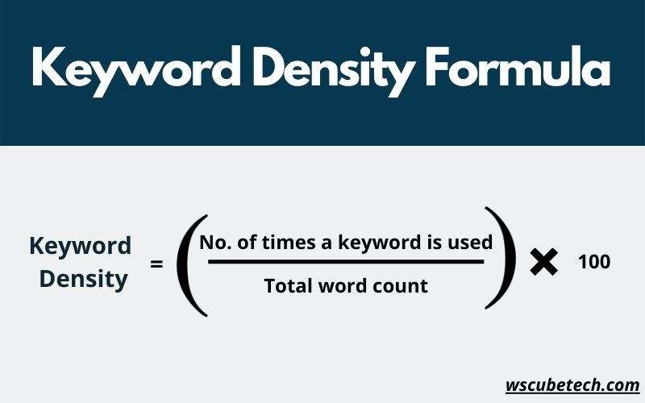
Keyword Density Example
If I am writing an article of 1000 words and using a keyword 15 times, then the density will be:
(15/1000)*100 = 1.5%
9. Which is the best keyword density checker or calculator?
While there are several online keyword density checker tools available, there are a few on which we can rely on:
10. What does the keyword difficulty score tell you?
The score of keyword difficulty tells us that if I use a keyword in my content with the intention of ranking for it on Google, how much more difficult it will be for me.
The keyword difficulty score is based on how many websites are targeting those keywords, as well as the authority of websites and the quality of content already ranking on top of Google’s SERP.
11. What is a good keyword difficulty score?
The right score for keyword difficulty depends on the website for which we are doing keyword research. If we have a high authority website with quality content and high traffic, we can go with the keywords that have high keyword difficulty.
On the other hand, if we are doing SEO for a new website or low-authority site, then it is suggested to use keywords that have low or medium difficulty.
A better step would be to use keywords that can be ranked easily. Over time, we can build the authority and then go for higher-difficulty keywords.
12. Can you categorize keyword difficulty scores into low, medium, and high?
Sure. The keyword difficulty score ranges on a scale of 1 to 100.
- Low keyword difficulty score: 1 to 29
- Medium keyword difficulty score: 30 to 70
- High keyword difficulty score: 70 to 100
13. What is keyword frequency in SEO?
Keyword frequency means how often a keyword is used within the content. If a keyword is used several times within the content, its frequency rate will be higher. Similarly, if I use a keyword lesser times, the frequency rate will be lower.
The SEO keyword frequency is very similar to keyword density, which also represents how many times a keyword appears within the content.
14. How many keywords can you use in an article?
The number of keywords to be used depends on the total number of words in the article. It is because we need to maintain the right keyword density.
A good keyword density is between 1% to 2%. So, if I am writing an article of 1000 words, then I can use around 7-8 keywords. However, we must still ensure that every keyword is used in a natural flow.
15. How to find long-tail keywords? Please share some tips and tools.
There are several ways to find long-tail keywords for search engine optimization. Here are some top tools and tips:
a) Make the most out of Google Autocomplete
When you type your short-tail keyword in the Google Search bar, it automatically provides some suggestions. These suggestions are shown on the basis of what people are searching for on Google related to your topic.
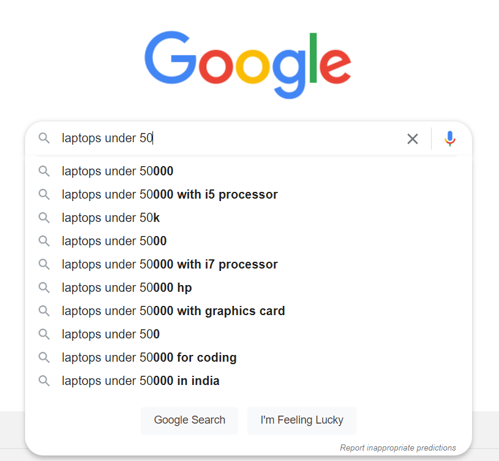
b) Check the ‘Related Searches’ section
Similar to Google Autocomplete, the Related Searches section available at the bottom of the SERP shows queries related to your topic.
You just need to search for your keyword on Google and go to this section. Not all suggestions might be relevant, but this is a good idea to pick some good long-tail keywords.
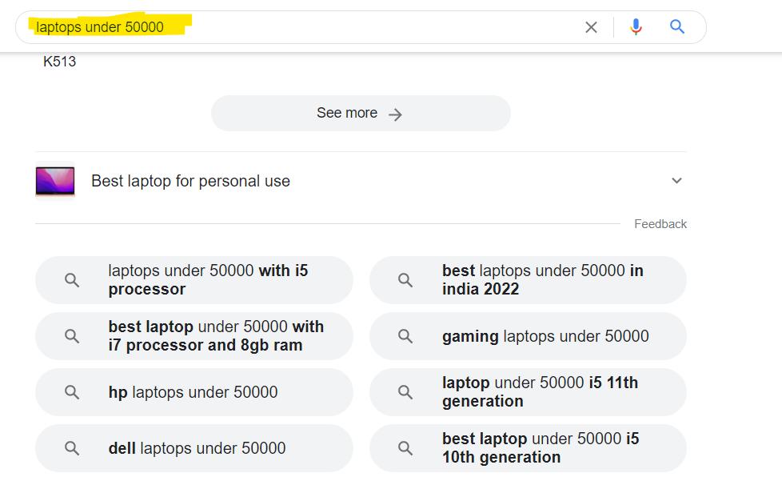
c) Use keyword research tools
SEO tools like Ubersuggest, Ahrefs, and SEMrush also show you long-tail keywords and questions. Make sure to make the most out of these.
d) Use Answer The Public
Answer The Public is a great tool to find questions and long keywords related to your phrase. No other tools show more long tails than this tool.
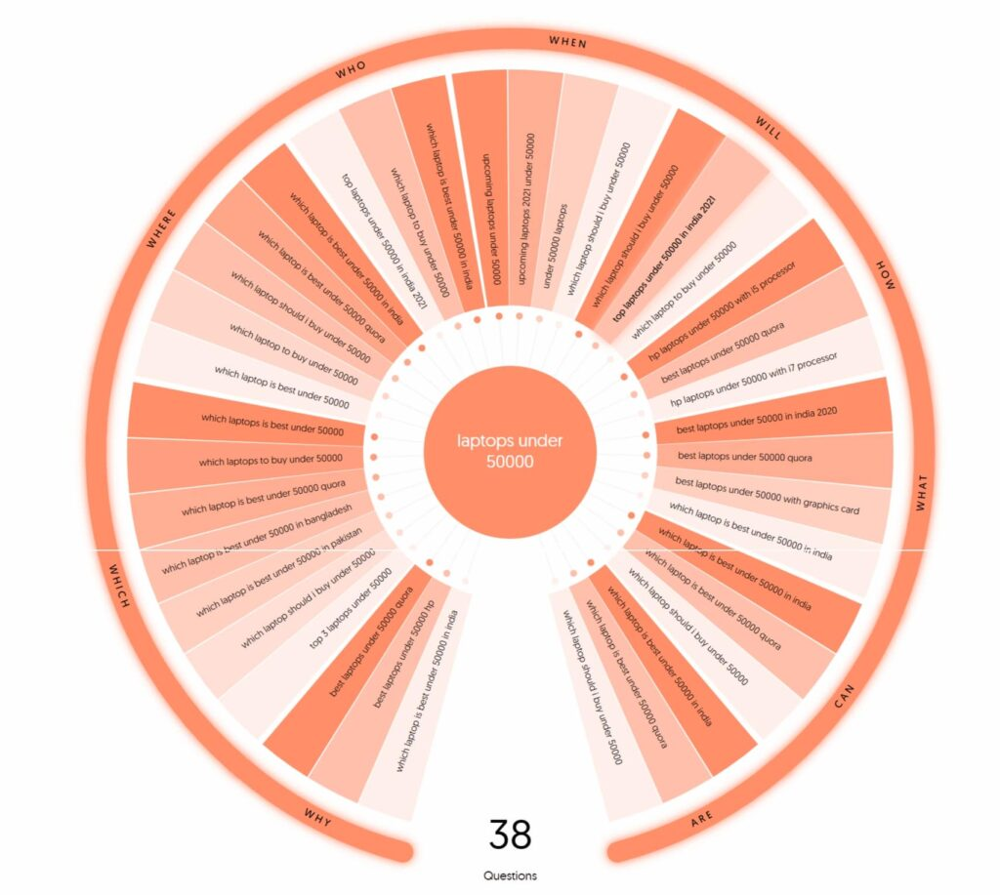
e) Analyze and use Quora questions
Quora is another platform that has questions that have been asked by real users. These questions show how people search for things. Just search for your keyphrase on Quora and pick the right questions.
f) Use Keyword Tool Dominator
It is a free tool that helps you research long-tail keywords with low competition. Keyword Tool Dominator shows the search queries of users based on Google’s autocomplete feature. To be precise, it is your advanced Google Suggest tool.
16. What are geo-targeted keywords in SEO? Explain with an example.
The keywords that show the searcher’s intent to find a local business based on location are called geo-targeting keywords.
For example, if someone is searching for a ‘Digital Marketing Course in Jodhpur’, then his intent here is to find a course available in Jodhpur City.
Let’s take another example. Someone searches for ‘Samsung showroom in Jaipur’. His intention is more likely to find and visit the local Samsung showroom in the city of Jaipur.
To be precise, you can say that the keywords that have some location in them are known as geo-targeted keywords.
17. What are navigational keywords in SEO? Explain with an example.
Navigational keywords mean that the searcher is looking for a web page on a specific website directly from Google. The user, in this case, is generally aware of or knows about the page’s product/service/information and wants to find it quickly.
Navigational Keyword Examples
- WsCube Tech SEO course
- Boat Airdopes 141 Amazon
- GoDaddy VPS Windows Server
- BYJU’s Jaipur office
Generally, the navigational keywords have the name of the product, brand, service, location, etc.
18. Does bounce rate affect the SEO of a website?
Yes. Bounce rate can impact the website's SEO. It is because when a high number of visitors leave the site without taking any action, it can mean that they are not satisfied with the content, user experience, website speed, or other things.
Since SEO is all about how a better experience you can offer to users, the bounce rate shows that the users aren’t highly satisfied. It can hamper the ranking of specific pages, especially when the bounce rate for similar pages of competitors is lower.
19. What is the bounce rate formula? How to calculate the bounce rate for a website?
We can use the bounce rate formula to calculate the bounce rate of a web page.
As per the formula, divide ‘the number of visitors leaving the page without action’ by ‘the total number of visitors on the page’. Then, multiply the result by 100. It will give us the bounce rate percentage.
Bounce Rate Formula in Google Analytics
Bounce Rate = (No. of visitors leaving without action / total page visits) * 100
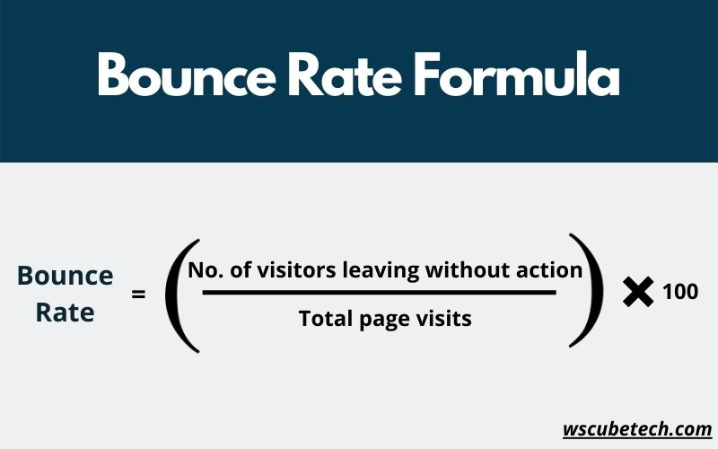
Example:
Let’s understand the calculation with an example. If 1,000 people are visiting a web page, and 600 of them are leaving without taking any action, then the bounce rate will be:
(600/1000)*100 = 60%
20. What can be the reasons behind the high bounce rate of a website?
It is one of the top SEO interview questions for experienced professionals. You need to know about concepts of bounce rate, its role, why it matters, and how you can reduce it.
There can be several reasons behind the increased bounce rate of a page. Some of the primary factors are listed below:
- The speed of the page or website is slow
- Lack of strategic internal linking on the page
- Misleading meta title tag
- Use of clickbait techniques
- Users landing on a blank page
- It is a landing page
- Low-quality content
- Poor UI/UX
21. What is a session in Google Analytics?
Session in GA is the time duration for which a visitor is active on a page, website, or mobile app.
In case, a user leaves the site and comes back within 30 minutes, then it will be considered part of the previous session.
Moreover, if a user remains on the site for 30 minutes due to inactivity or other reasons, then a new session starts after that.
22. What is the average session duration in Google Analytics?
The average duration for a session in Google Analytics is 2 to 3 minutes.
It is calculated on the basis of the total session duration (time spent) by all users divided by the total number of sessions.
Average Session Duration Formula:
(Total Session Durations by All Users / Total Number of Sessions)
Example:
Let’s understand this with an example. If the period of time spent by all the users is 800 seconds and the number of total sessions is 20, then the average session duration will be:
(800/20) = 40 seconds
23. What is dwell time in SEO?
The meaning of dwell time is when a user clicks on a result from the SERP, visits the page, and comes back to the SERP. The period of time spent on that page between visiting the page from SERP and coming back to SERP is called the dwell time.
It happens so often when users browse the page to find out whether it fulfils the purpose. The user can go back after consuming the content or return to SERP instantly (in case the page fails to meet the expectation of the user).
24. Does dwell time affect SEO? Is it a ranking factor?
Google has neither said that dwell time is a ranking factor, nor has denied it.
However, there have been certain clues that show that Google considers it while ranking a website. For example, the RankBrain algorithm by Google mentions that the search engine checks the time duration spent by a user on a web page.
It means dwell time is somehow a ranking factor.
25. How to create a sitemap for a website?
There are both manual and automatic ways to create a website sitemap. For small websites with a low number of pages, it can be created manually using Notepad.
However, the best way to do this is by using an online tool like XML-sitemaps.com or my sitemap generator.
For WordPress websites, SEO plugins like Yoast SEO generate sitemaps automatically.
26. Which SEO metrics are the most important to measure?
The most important metrics to measure in SEO are:
- Ranking of primary keywords
- Total website traffic on a monthly basis
- Click-through Rate (CTR)
- Bounce Rate
- Conversion Rate
SEO Interview Questions for Experienced (2-5 Years Senior Executive)
If you have been in the field of search engine optimization for more than two years now, then switching to a new job can prove to be very fruitful. You can get better packages and career growth.
While going for the job, you must prepare for these top SEO interview questions and answers for experienced professionals. Whether you have 2 years experience, 3 years experience, or even 5 years of experience, these questions will do the work for you.
Also, make sure to go with the above questions as well.
1. What does the term Sandbox mean in SEO?
Google Sandbox is like a filter that doesn’t allow newly-built websites to rank on the top results of SERP. Although Google has never confirmed anything such, but experienced SEO professionals have observed it on several occasions.
Even when they worked on all the SEO factors the right way, their websites didn’t receive top rankings for a few months.
2. What is Google Suggest?
Google Suggest is another name for the autocomplete suggestions provided by the search engine giant. As discussed above, it improves the user experience for people searching for their queries on Google.
From the SEO point of view, it is a great option to look out for long-tail keywords and understand the search intent of users.
Explore Our Most Popular Marketing Courses
3. What is keyword proximity in SEO?
The meaning of keyword proximity is how distant or close two words/phrases are from each other in a piece of content. If those words are closer to each other, then the proximity will be higher. Similarly, if those words are far from each other, the proximity will be lower.
Here is an example of keyword proximity in SEO:
- WsCube Tech’s Digital Marketing Course is great. I love the institute.
- It’s great to do Digital Marketing Course. I love WsCube Tech institute.
If someone searches for ‘wscube tech digital marketing course’ on Google, the chances of appearing in the first result are higher compared to the second.
It is because the words WsCube Tech and digital marketing course are closer to each other in the first sentence. In the second sentence, there is a distance of two words between WsCube Tech and Digital Marketing Course.
So, the keyword proximity is higher in the first sentence.
4. What is keyword prominence in SEO?
Keyword prominence is the process of using the primary keyword of the content within the initial part of it.
For example, I am writing an article on the topic “Top SEO Interview Questions for Freshers and Experienced”. Here, for instance, my primary keyword is ‘seo interview questions’. Then I should try to use this keyword within the first 100 words.
It will give prominence to the primary keyword and tell the search engines that my content is related to this topic. Eventually, keyword prominence helps in search engine optimization.
5. Why should we use long-tail keywords for SEO?
The primary reason to use long-tail keywords in SEO is that it allows you to optimize the content for specific and targeted search queries.
Moreover, the competition on these keywords is generally lower compared to seed keywords or mid-tail keywords. It means your chances of ranking for those queries will be higher.
6. What are transactional keywords in SEO? Explain with an example.
The keywords that show the intent of the user or searcher to buy something or take some important action are called transactional keywords.
What it means is that there are higher chances of the user purchasing something. So, if that user lands on our website, the probability of his conversion is more. Hence, it is recommended to use transactional keywords on product/service pages, as well as in ad campaigns.
Transactional keywords examples:
Such keywords usually include terms like buy, deal, cheap, discount, where to buy, etc.
- Where can I buy iPhone for cheap
- Buy shoes for men
- Web hosting deals
- Earphones sale
Related Reading: 30+ Most Asked Digital Marketing Interview Questions & Answers
7. What is the difference between bounce rate vs exit rate?
The next concept on our list of SEO interview questions and answers is about exit rate vs bounce rate.
Bounce rate and exit rate in SEO are not the same, even though there are some misconceptions around it.
The bounce rate is calculated on the basis of the number of users visiting a page against the number of users leaving without action.
On the other hand, the exit rate in SEO is calculated when a user comes to Page A, then goes to Page B, and so on, and then leaves it. The exit rate will be counted on the page where the user left the website.
The bounce rate is calculated only if the session starts on a page and ends there. Whereas, the exit rate is calculated when the user navigates to other pages from one page and then leaves the website from a certain page.
Let’s understand the difference between exit rate and bounce rate in SEO with an example:
a. Session A: Page 1 > Page 2 > Page 3 > Exit
b. Session B: Page 2 > Page 3 > Exit
c. Session C: Page 1 > Page 3 > Page 2 > Exit
Here, 2 users are leaving the site from Page 3, while one is leaving from Page 2.
So, the exit rate for Page 1 will be 0% since the users didn’t leave from here. Second, the exit rate on Page 2 will be 33% as one user left the website out of three sessions.
Third, the exit rate on Page 3 will be 66% as two users left the site from here out of three sessions.
In this example, none of the users left the site from a single page. So the bounce rate on all three pages will be 0%. It is because bounce rate is calculated only if a user comes to a specific page and leaves without navigating further.
8. What bounce rate is good in SEO?
A good bounce rate varies on the niche of the website and the type of page. On average, the bounce rate should be between 40% to 50%.
Here is a quick overview of the good bounce rate in SEO on the basis of niches and types of sites:
- eCommerce sites: 20% to 45%
- Content-based sites and blogs: 35% to 60%
- Landing pages: 60% to 90%
- Web portals, news sites, event sites, and dictionaries: 65% to 90%
- B2B sites: 25% to 55%
In general, you can categorize the bounce rate as follows:
- Poor: 70% or more
- Average: 55% to 70%
- Good: 41% to 70%
- Excellent: 25% to 40%
9. What steps can we take to reduce the bounce rate?
Here are some crucial tips to decrease the bounce rate of a website:
- Ensure that your meta title matches the content
- Improve content readability
- Enhance website UI
- Avoid too many ads
- Add images and media on the page
- Work on improving website speed
- Use internal linking in a strategic way
- Make sure there are no technical glitches
10. What is the difference between dwell time and bounce rate?
There is a slight difference between bounce rate vs dwell time.
In dwell time, the users come to a page from SERP and then return to the SERP.
Whereas, the visitors who bounce can come from SERP, social media, direct links, or anywhere else. Moreover, even if they come from the search results page, it is not guaranteed that they returned to that SERP.
Bounce rate is considered even if the users close the tab, type in a new URL, or went to another website.
Interview Questions for You to Prepare for Jobs
| Digital Marketing Interview Questions | SEO Interview Questions |
| Email Marketing Interview Questions | Content Writing Interview Questions |
11. Other than XML, which sitemap formats does Google support?
Here is the list of sitemap formats supported by Google:
- XML
- RSS
- mRSS
- Atom 1.0
- Txt
12. What is the maximum number of links a sitemap can have?
A sitemap can have a maximum of 50,000 links. Google will not crawl more than it.
If there are more than 50,000 URLs on a website, then multiple sitemaps will need to be created.
13. What is the maximum file size a sitemap can have?
The maximum file size of a sitemap can be 50 MB. For sitemaps that exceed 50 MB, the best practice is to reduce their size and divide them into multiple files.
14. Can you share some anchor text best practices?
Here are some of the tips for optimizing an anchor text for SEO:
a) Keep it precise
There is no defined word limit for the anchor text, but you should try to keep it precise. You can think about the user intent and decide what anchor text will drive more clicks.
b) It should be relevant to the linked page
The anchor text must reflect the topic or intent of the page link where users will land.
c) Don’t Overoptimize
An anchor text should not be over-optimized. It means don’t use the same keyword as anchor text for internal links and backlinks. It looks suspicious to Google, especially after the Penguin algorithm update.
d) Don’t use generic words
Many people put the link on common words like ‘click here’ and ‘read more’. This is not a good practice for anchor text optimization.
15. What should be the meta description length? Is there any character limit?
The meta description character limit is 155 to 160. However, nowadays, Google is counting meta descriptions on the basis of pixels instead of characters.
So, the meta description length should be below 990px.
These are some latest trends that you need to know as you will be asked about these among SEO interview questions.
16. What is SEO canonicalization?
Canonicalization in SEO is used for avoiding duplicate URLs and content issues. This is done using canonical tags, which tell Google about the page URL that you want to be indexed.
Sometimes, a page can have multiple URL variations and parameters. Google might not know which URL to index. To avoid this, canonicalization is used.
17. What is the difference between the alt tag, title, and caption of an image?
Following are the differences between image title vs alt tag vs caption:
a) Image alt tag
Its role is to tell Google and search engines about the intent of the image used. The alt tag is also helpful for visually impaired people as it speaks the alt tag of the image.
b) Image title
It is the name of the image. Google also checks for the image title to better understand the purpose of the image. Moreover, whenever users hover over the image on a page, the title becomes visible.
c) Image caption
If you want to show some text under the image on a blog post or page, the caption is used. For instance, you can use it to show the ‘image source’, etc.
18. What is a redirect meta tag?
The redirect meta tag in SEO is used for automatically redirecting visitors from one page to another. This is usually used when a page is temporarily or permanently moved, deleted, or the page URL is changed.
For example, if I am deciding to change my domain name and move the website to a new domain name, then the redirection tag can be used. All the users coming to the previous domain will be redirected to the new one.
19. Why is an SSL Certificate a ranking factor?
The role of an SSL certificate is to secure and encrypt the data or information submitted by users on a website. This data travels from the browser to the website server. If an SSL certificate is not there, this data can be compromised or intercepted by hackers.
Since it hampers the user experience and results in data leakage for users, Google considers it a ranking factor.
20. What is mobile SEO?
Mobile SEO is the search engine optimization technique to improve the experience and performance of a website for mobile devices.
Since Google indexes the mobile version of the website, it is crucial now to go for mobile SEO. The reason behind Google considering it is that the majority of website traffic today comes from mobile devices like smartphones and tablets.
21. What is the difference between do-follow and no-follow backlinks?
These are the types of backlinks. If it is a do-follow backlink, the PageRank signals or link juice will be passed to it because Google’s crawlers will follow the link.
Whereas, the link juice will not be passed if it is a Nofollow link.
Technically, all the links are do-follow by default. On the other hand, the no-follow links have the rel=” nofollow” tag. Crawlers decide whether to follow the link or not on the basis of these tags.
Upcoming Masterclass
Attend our live classes led by experienced and desiccated instructors of Wscube Tech.


22. What is SEM? How is it different from SEO?
The full form of SEO is search engine optimization. On the other hand, SEM stands for search engine marketing.
Let’s understand the difference between SEM and SEO.
SEO is the process of optimizing a website’s ranking and driving traffic from search engines in an organic manner.
Whereas, SEM includes driving traffic from search engines both organically and through paid advertising.
So, for example, I am running Google Search Ads and also optimizing my website’ SEO, then I am doing SEM.
23. What is keyword stemming?
The ability of Google’s algorithm to understand the context of the text on a page and match it with a relevant search query is called keyword stemming in SEO.
For example, if I have used ‘buy web hosting’ on my page, the search engine algorithm understands the different variations of the word ‘buy’. Accordingly, it can show the page to the users even when they search for things like ‘buying web hosting’ or ‘purchase web hosting’.
24. What are link penalties and how to recover from these?
- Meaning of Link penalty
When you build a high number of backlinks to your website that is spammy, from low-quality content, unnatural, repetitive, etc., Google will penalize your site and remove it from indexing. This is called link penalty in SEO.
It is because Google considers unnatural and spammy link building as a violation of its webmaster guidelines.
- Ways to Recover From Link Penalties
If there are backlinks violating the webmaster guidelines, you need to get rid of them in order to recover from link penalties. Here is how you can do it:
a) Create a list of all your website’s backlinks
You can use tools like Ubersuggest or SEMrush to find the backlinks.
b) Find the bad backlinks
Check the links coming from spammy sites, duplicate content, irrelevant niche sites, thin content sites, as well as adult or gambling sites.
c) Remove these links or request removal
If you have created these links from sites where you can log in, remove all these backlinks.
On sites where you can’t remove links on your own, create an email template and send the emails to the website owners. Request them to remove your links.
d) Disavow
Create a disavow report of all the bad links and submit it using webmaster tools.
25. What is a link audit and its importance?
The process of auditing or checking the backlink profile of a website is called link auditing.
A link audit is crucial for SEO to find whether the backlinks are healthy or not. During the audit, we can find if there are bad links that can hamper the SEO. Moreover, a high number of bad links can also cause link penalties. So, conducting a regular link audit is important.
26. What is eCommerce SEO?
The process of optimizing an eCommerce website or online store for search engines is called eCommerce SEO.
eCommerce sites are slightly different from general sites as these have a lot of products, categories, and images. The number of pages can be higher here, and all the product pages need to be optimized to drive traffic.
27. What is redirection and its types?
Redirection is the technique of redirecting users from one page to another automatically. This is used when a page has been moved to a new URL, deleted, or changed.
If the redirection is not done, the users will land on a blank page or 404 page. This is bad for SEO. So, a redirection tag is used.
There are several types of redirections in SEO:
- 301 Redirection
- 302 Redirection
- 303 Redirection
- 307 Redirection
- 308 Redirection
- Meta refresh redirect
28. What is the difference between 301 and 302 redirection?
- 301 Redirection: It is used for permanent redirection. This tells Google that you have permanently moved the page or resource. Google will then index the new page.
- 302 Redirection: It is used for temporary redirection. This is done when you have set up the redirection for a particular time period. Google will then not remove the previous URL from indexing.
29. What is the role of schema?
A schema is a form of microdata that provides context to a page. It helps in telling Google exactly what is the context of the page.
For example, we can use schema to define whether it is a product page, event page, person page, organization page, recipe, video, review, etc.
It also helps in getting your content shown in featured snippets on the SERP.
SEO Manager Interview Questions and Answers
So far, we have gone through the top interview questions on SEO for freshers and experienced professionals having 0 to 5 years of experience.
But if you are an SEO Manager or applying for a managerial role, then some tough questions are asked. Below is a list of common SEO manager interview questions with answers.
Also, ensure to go cover the topics covered above as well.
1. What is Google AMP? Start with its full form.
AMP stands for Accelerated Mobile Pages.
It is an open-source web framework built by Google. The aim of Google AMP is to optimize the websites for performance, smooth user experience, and load fast even when there are ads on the sites.
When websites implement Google AMP, the pages become lightweight and offer high performance across all screen sizes and browsers.
2. Tell me about the biggest mistakes that you have done in SEO?
Please note that this is among the most common SEO specialist interview questions. You must be prepared for it.
For the answer, you can go down your career lane and create a list of SEO mistakes you have done. These can be the times when you published duplicate content, created spammy links unintentionally that declined website rankings, did keyword stuffing in the initial stage of your career, etc.
Mention those mistakes that hampered the website rankings and the monthly traffic.
3. What are contextual links in SEO?
Contextual links are those backlinks that have been built from a piece of content that has some context. The content should be relevant to the context of the link.
In SEO, contextual links have more value than links built from website sidebars, footers, or irrelevant content.
Example of contextual link building
For instance, I have written and published an article on ‘how to learn SEO’ and tried to build a backlink to it from an article written on ‘how to become a digital marketer’. This article will be a good fit for me to build a contextual link, especially when there is mention of starting a career in SEO.
4. What is the Rankbrain algorithm in SEO? Why is it important?
Google RankBrain is an algorithm based on machine learning that has now become a crucial part of Google’s core search engine algorithm. What RankBrain does is understand the context or intent of the search query in an intelligent manner and show the most relevant results.
The RankBrain algorithm considers several factors about a search query before showing up the results. These factors include the search intent, user location, words searched, personalization, previous searches by the users, etc. All these are done so that Google can show the best results to users.
Example of Google RankBrain in action
For example, if I search for ‘backlink checker’, my intent is to find a tool that can help me check the backlinks. So, Google will show me a backlink checker tool.
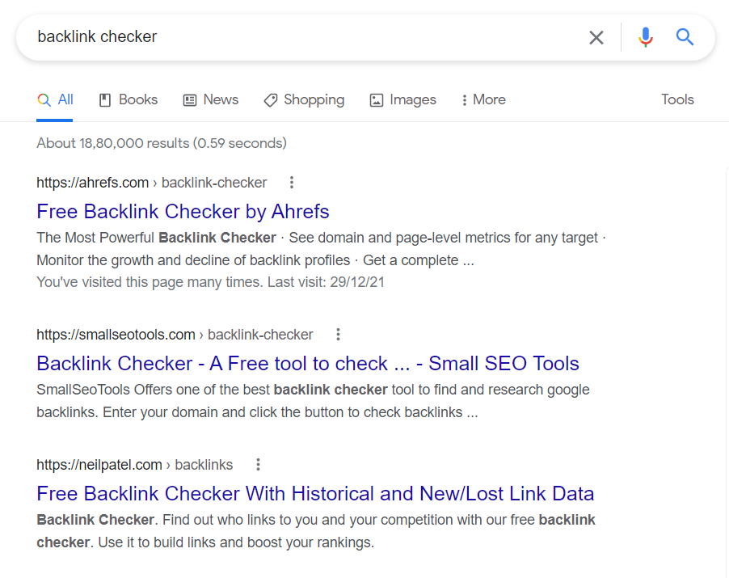
Whereas, if I search for ‘top backlink checkers’, Google will show me the list of tools or a blog post with relevant content, instead of an online tool.
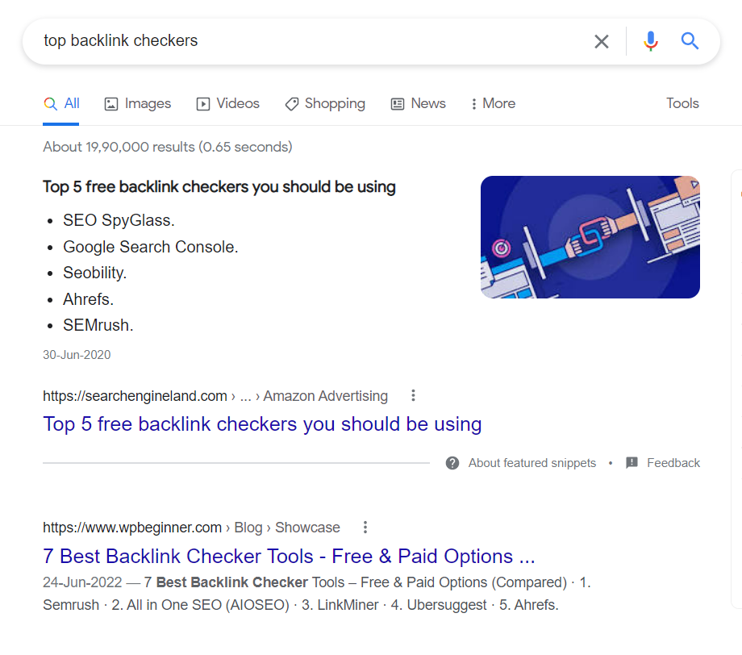
This is because the Google RankBrain algorithm understands the intent and context of the user.
5. How to develop a solid SEO strategy?
When you are applying for a senior role, this is one of the most asked SEO manager interview questions. You must have experience and knowledge both of how to create a great SEO strategy for different verticals.
Before going for the interview, know about the industry/niche of the company, and understand what can be the best SEO strategy for that niche.
If the business industry is as same as your current job, then things become a bit easier for you.
Regardless of the niche, these are some common steps for creating an effective SEO strategy:
- Research the right keywords according to business products, services, etc.
- Perform competitor research to understand what they are doing to rank on top
- Understand how you can do better than competitors
- Find on-page SEO gaps and work on it
- Optimize website content for search intent
- Creating high-quality backlinks from niche sites
- Optimize existing content and work on fresh content
6. What is disavow in SEO?
When there are spammy backlinks, it can hamper the ranking of the website on Google. We can use the disavow tool to tell Google that we don’t want certain backlinks to be counted.
The disavow is usually performed after link auditing or when the ranking of the faces loses in rankings.

7. What is the difference between Google Analytics and Google Analytics 4?
There are a number of important differences between Universal Analytics and Google Analytics 4. Following are the primary differences:
a) Distinct measurement model
Universal Analytics (current GA) measures data on the basis of sessions and pageviews. Whereas, GA4 measures data based on events and parameters. Everything in GA4 is an event.
b) No Categories in GA4
In the current and previous versions of GA, the events have a category, action, label, and hit type. Whereas, GA4 doesn’t have any categories, actions, and labels.
c) Free connection to BigQuery
This is a major difference. Google Analytics 4 brings free connection to BigQuery. It is a premium feature that was available only to the users of Google Analytics 360.
Below is the quick tabular comparison of Universal Analytics vs Google Analytics 4:
| Google Analytics | Google Analytics 4 | |
| Measurement Type | Based on sessions | Based on events |
| Hits Limit | 10 million | none |
| Use of Machine Learning | Basic level | Advanced level |
| Basic metrics | Pageviews | Events |
| Sampling | 5 lakh+ | 10 lakh+ |
| Privacy threshold | No | Yes |
| Connection to BigQuery | No | Yes |
| Engagement Metric | Bounce rate | Engaged sessions/user |
8. Does Google Analytics have a premium plan?
Yes. The premium version of GA is called Google Analytics 360. It provides numerous additional features and benefits. GA 360 is crucial for large websites driving millions of traffic, and businesses that want to make the most out of data and analytics.
9. What are the features and benefits of Google Analytics 360?
There are plenty of features that Google Analytics 360 has compared to Universal Analytics.
Here is a quick list of Google Analytics 360 features:
- Data volume capacity of up to 20 billion hits
- Salesforce integration
- Add 400 views per web property
- Dedicated GA account manager
- Support in GA 360 implementation
- Training by analytics experts from Google
- Data integration services
- Integration with Google Drive
- Integration with BigQuery
- Custom funnel reporting
- Data-driven attribution model
- Digital measurement strategy
10. What is the cost of Google Analytics 360?
The Google Analytics 360 price starts from $150K per year. The billing is done on a monthly basis, which means you need to pay $12,500 per month.
The cost may be more on the basis of features required and the website size.
11. Tell me about your greatest SEO success story?
You must be prepared for this as it is among the top interview questions on SEO for a managerial role.
Here, you need to answer honestly and share your experience when you worked on a project and brought the website to Google’s first page for various high-volume keywords, or generated millions of monthly traffic.
The SEO success story varies for every individual. But since you are applying for the role of an SEO Manager, you have years of experience in this field. It means you definitely must have some good projects on which you worked.
12. What can you do in case Google bans your website because of black hat SEO?
If Google bans your website, the first thing to do is find the cause behind it. Black hat SEO is broad, like white hat SEO. You need to find and evaluate which black hat SEO technique has caused the penalty.
Here are some of the things to look for:
- Duplicate content
- Links from poor websites
- Spammy backlinks
- Hidden links on the website
- Keyword stuffing
- Virus on website
- Bad redirects
- Cloaking
Once you have found the issue, it is time to fix it. For example, if you have found spammy backlinks, then you need to get rid of these links manually and submit the disavow report to Google.
In case you find duplicate content on the website, then first replace or delete it. Also, if your website is infected with viruses, make it a priority to fix it.
Wait for a few days after fixing the issues. Even after a couple of weeks, if the website rankings are not recovered, then send a reconsideration request to Google in a polite manner.
Make sure to mention the reasons behind the issues and that you have fixed everything before sending a reconsideration request. Real users from the Google team will look into it and recover the indexing of the site. It can take 10 to 30 days.
13. What SEO verticals have you worked on in your career?
When you are asked SEO interview questions about verticals, you should mention your areas of expertise in search engine optimization, and the top industries of your expertise.
SEO and digital marketing need expertise in specific industries or niches. Because the strategies will be different for every niche. For example, if you have the majority of SEO experience in EdTech sector, mention it. Also talk about the top projects in this niche for which you have driven results.
14. How do you measure SEO success?
The success factors of an SEO project may vary on the type of business and its objectives. In general, these are the core metrics or key performance indicators (KPIs) to consider:
a) Keyword rankings
The primary keywords related to the products or services should be performing well. If you have brought most of the primary keywords on the first page of SERP, it is a success.
b) Monthly website traffic
There should be a significant rise in website traffic over time. It is a crucial metric as the motive behind first-page rankings is eventually to bring the relevant users to the website.
c) Click-through rate (CTR)
CTR is another important metric to measure the success of an SEO project. It is because if your keywords are ranking but significant traffic is not coming, then it means your CTR is poor. To improve this, the meta title and meta description need to be optimized.
d) Bounce Rate
The bounce rate shows the percentage of visitors leaving the site without interacting or taking any action. If you have significantly reduced the bounce rate, it is a success factor.
e) Conversion Rate
The rate of visitors coming to your site and actually converting is the conversion rate. You can measure conversion on the basis of your goal, like users signing up for a newsletter, buying a product, submitting the inquiry form, etc.
15. Why did Google rollout the Hummingbird update?
Google rolled out the Hummingbird update in 2013 as the biggest update to its algorithm since the inception of its search engine.
The motive behind Google Hummingbird was to provide searchers with precise and more accurate results for their queries. The search engine giant focused on matching the search intent to the most relevant results.
Top SERP features like knowledge graph and semantic search were introduced as part of this algorithm.
16. What was the motive of the Penguin update?
The motive of the Google Penguin algorithm was to reward great websites for their quality and offered value, while penalizing the sites that were manipulating the rankings.
Specifically, the Penguin update was harsh on the websites that were using link schemes and keyword stuffing. This update is still part of the core algorithm of Google.
17. What is your previous experience in managing an SEO or marketing team?
In this type of SEO manager interview questions, you need to mention your real experience. If you were in a managerial role already, talk about the team's strength, the top projects you managed, and your strategy to manage the team over the main SEO tasks.
18. What do you think are the duties and responsibilities of an SEO manager?
Here is a quick list of the SEO manager's responsibilities:
- Create solid SEO strategies and execute them
- Manage a team of SEO Freshers, Executives, and Analysts
- Provide timely keywords to the content writing teams
- Conduct technical SEO audits and suggest fixes to the development team
- Optimize website content
- Work on off-page SEO techniques
- Check and analyze website data like traffic, rankings, etc.
- Coordinate with social media and PPC teams for better campaign results
- Staying up-to-date with the latest SEO and digital marketing trends
19. Which are SEO factors that are out of your control?
Below is a list of SEO ranking factors that you can’t control:
- Crawling and indexing time of new pages
- Domain authority of the website
- Updates in Google algorithm
20. How do you keep yourself updated with the latest trends in SEO?
The answers to such interview questions on SEO depend on your personal preference. If you follow any specific blog, SEO influencer, or YouTube channel, mention their names.
For example, I follow Search Engine Journal, WsCube Tech YouTube channel, and Neil Patel to keep myself up-to-date with the latest SEO trends and algorithm updates.
You’ve gone through the most important SEO interview questions — now it’s time to check your preparation. Practice our SEO Quiz and see how interview-ready you really are.
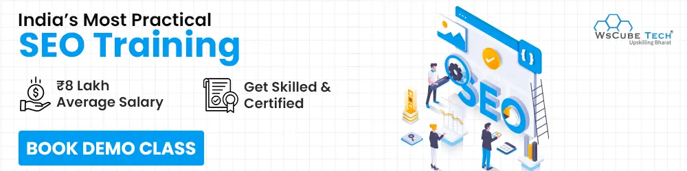
SEO Career FAQs
An SEO Analyst is a part of the SEO team who works on analyzing the search engine optimization efforts, data analysis, and works closely with SEO Executives and other teams to improve the numbers.
The primary responsibilities of an SEO Analyst include:
a. Analysis of website structure, internal linking structure, etc.
b. Working on SEO strategies based on data.
c. Doing competitor research, collecting data, and checking the ranking & traffic on a given SEO project, including website, blog posts, product pages, etc.
d. Keeping track of different sources of website traffic, like social media traffic, referral traffic, organic traffic, etc.
e. Offering recommendations on reducing bounce rate and increasing session duration.
An SEO Specialist is an experienced person in the team who works on creating new strategies or revamping the existing SEO strategies for better results.
The role of an SEO Specialist or Expert includes:
a. Crafting strategy for search engine optimization for driving traffic and improving keyword rankings
b. Coordinating with PPC team for well-execution of ad campaigns
c. Managing SEO budget, providing an estimated monthly budget for projects, and working accordingly
d. Collaborating with SEO Executives, content writers, and web developers for executing the project
e. Have skills in search engine marketing (SEM)
f. Creating backlink building strategies according to projects
As the name suggests, SEO Manager is in charge of the projects and SEO team. It is a managerial role that demands not only high experience in the field, but also the ability to manage a team and multiple projects simultaneously.
You can learn SEO skills with reliable resources like the online SEO course by WsCube Tech.
Below is a quick list of questions for candidates with 3-5 years of experience:
a. What are some things to know while building a backlink?
b. What is the difference between visits and views in Google Analytics?
c. What is cloaking?
d. Why use Google Search Console?
e. What is a schema or structured data in SEO?
f. What are doorway pages?
g. What are some good SEO plugins for WordPress?
h. How to improve domain authority?
i. What is the difference between a subdomain and a subdirectory?
j. What is the Google Pigeon update?
k. What is Google bombing?
l. What is link farming?
m. How to increase the page rank of a website?
According to PayScale, the average salary of an SEO professional in India is around ₹285,875. The salary varies on the basis of skills, experience, as well as location of the company.
These are some of the top companies in India hiring for SEO roles:
- Amazon
- Bank Bazaar
- Sulekha
- NVIDIA
- Verizon
- Vedantu
- BYJU’S
- KFC
- Mindtree
- Thrillophillia
- Mphasis
- Zoho
- NP Digital
- Wipro
If you want to learn SEO for free, then WsCube Tech is the best YouTube channel for you. You can find the detailed full course in Hindi. Here is the playlist. On the channel, you will also find videos on SEO interview questions and answers.
Explore Our Free Courses
| Semrush Course | GTM Course | Blogging Course |
| Email Marketing Course | Video Editing Course | Affiliate Marketing Course |
Join Our On-Campus Digital Marketing Program


Leave a comment
Your email address will not be published. Required fields are marked *Comments (0)
No comments yet.